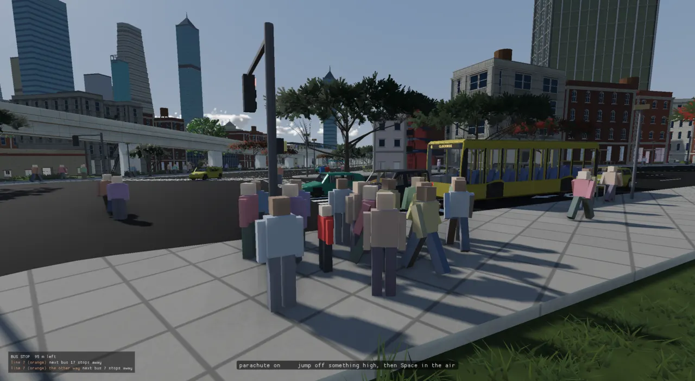

Everything the game does happens inside one function, Application::runFrame, which
polls the window, runs every system's update, runs the simulation in fixed 1/60 s steps, and
draws. The world those systems work on is a small sparse-set ECS: an entity is a recyclable number, and each
component type lives in its own packed array. This page walks the loop, the data, and the seams around them:
events, threads, Lua, the editor, the frame ledger and the control socket.
In June 2026 main() was the engine: one monolithic loop, and every new feature (physics,
audio, AI) meant editing it (ADR-0004).
The engine now runs a city of tens of thousands of entities, Jolt physics, a crowd simulation, a Lua gun and
about fifty systems, in four hosts (the standalone viewer, the Qt editor, visionOS and the web). The spine has
to do four things for all of them:
An Application owns every engine-wide service: the window, the renderer, the World (the
entities), the simulation clock, the thread pool, the event bus, the frame ledger, the settings store and the
control channel. It is "pure mechanism": no game rule lives in it. Behaviour lives in systems, and
systems live in app states on a stack. The game proper is ArenaState, a
PlayingState holding an ordered vector of systems. The editor is another state
(EditorState), and the backtick debug overlay is a third, pushed on top while it is open.
Structure. The host decides who calls runFrame; the Application owns the services;
the state stack decides which states tick; a PlayingState ticks its systems in the order they were added.
A system is a class with six optional hooks. The interface was written before the ECS existed and deliberately does not mention entity storage, so it survived the move to an ECS unchanged (ADR-0006 says so in its consequences):
// A unit of engine behaviour, ticked by Application each frame. Override only // the hooks you need; all default to no-ops. The interface is deliberately // independent of the entity-storage model, so it survives the move to an ECS. class System { public: virtual ~System() = default; virtual void onStart(FrameContext&) {} virtual void onEvent(const Event&, FrameContext&) {} virtual void update(FrameContext&) {} virtual void fixedUpdate(FrameContext&) {} virtual void render(FrameContext&) {} virtual void onStop(FrameContext&) {} };
There is no dependency graph and no parallel scheduler: order is the order of addSystem calls
in ArenaState's constructor, and the comments there carry the reasons. That is the whole
"scheduler". It is simple to read and debug, and the price is that order constraints live in prose:
// The control channel's avatar (ADR-0079): consumes possess.cmd one-shots, // produces AgentDriver commands. AFTER CityWalkerSystem (commandeered // pedestrians already have bodies), BEFORE VehicleSystem (same-tick command // consumption) — and after PlayerSystem, so its chase-camera write wins. addSystem<citysim::CityPossessSystem>(citySys, physSys); addSystem<VehicleSystem>(physSys, camSys); // drives real cars: player + promoted
States add a second layer. AppState has isTransparent() and blocksInput(),
and the stack uses them to decide who updates and who renders: the debug overlay is drawn over the game, but
the game's update pauses beneath it. (That detail matters to probes: a one-shot staged for a game
system is not consumed while the overlay is up; docs/control-channel.md warns about it.) State
changes are never immediate. A state asks through FrameContext::transition, and the Application
applies it at the end of the frame, popping then pushing so onExit/onEnter bracket the
swap cleanly. A level load is an onEnter, so it happens there too.
Flow. Application::runFrame, top to bottom. Render interpolates between the last two
fixed steps, so motion is smooth even when no step ran this frame.
The heart of it, with the timing and logging lines elided:
int steps = clock.advance(frameDelta); interpolation = clock.interpolationAlpha(); // ... { RT_PROFILE_ZONE_NAMED("fixedUpdate"); frameStats.beginPhase(FramePhase::FixedUpdate); FrameContext ctx = makeContext(); // ... ctx.fixedStepCount = steps; for (int i = 0; i < steps; i++) { ctx.fixedStepIndex = i; stateStack.forEachActive([&](AppState& state) { state.fixedUpdate(ctx); }); } frameStats.endPhase(FramePhase::FixedUpdate); // ... } // Deliver everything enqueued during update/fixedUpdate before the frame // renders, so reactions land in the same frame as their cause (ADR-0066). frameStats.beginPhase(FramePhase::Dispatch); eventBus.dispatchQueued(); frameStats.endPhase(FramePhase::Dispatch); auto frameStart = std::chrono::steady_clock::now(); frameStats.beginPhase(FramePhase::Render); renderFrame(); frameStats.endPhase(FramePhase::Render);
Two details are easy to miss. FrameContext carries fixedStepIndex and
fixedStepCount, so work whose only consumer is the renderer (pose bakes) can skip every step but the
last when the loop is catching up. And the update phase is also where scripted input enters: the control
channel's tap and hold verbs stage a key name in Settings, and runFrame
feeds it through the same InputMap::processEvent a real keyboard uses (the comment there explains
why: the F key had been "fixed four times" through side doors while the key itself went untested).

Physics and the city simulation must not depend on the frame rate: a car's suspension integrated at 30 fps
behaves differently from one at 144 fps. So the simulation runs in fixed steps of 1/60 s
(ADR-0002).
SimClock keeps an accumulator of real time not yet simulated; each frame it adds the frame's
time and runs as many whole steps as fit. What is left over, as a fraction of a step, is the
interpolation alpha: render draws each moving thing that fraction of the way from its previous step's
transform to its current one.
Real frames (blue ticks) land anywhere; fixed steps (gold) are evenly spaced. The frame at the dashed line ran one step and has 50 px of accumulated time left over, less than one step, so it renders with alpha ≈ 0.83 rather than snapping to the last step.
accumulator += realDeltaSeconds * scale;
int steps = 0;
while (accumulator >= fixedStepSeconds && steps < MAX_STEPS_PER_ADVANCE) {
accumulator -= fixedStepSeconds;
simTime += fixedStepSeconds;
steps++;
}
// Hit the cap with work still pending: drop the backlog rather than carry
// lag into the next frame forever.
backlogDropped = false;
if (steps == MAX_STEPS_PER_ADVANCE && accumulator > fixedStepSeconds) {
accumulator = 0.0;
backlogDropped = true;
backlogDrops++;
}
alpha = accumulator / fixedStepSeconds;
return steps;
timeScale multiplies the real time fed in; the
step stays 1/60 s, so 8× speed runs more steps of the same size and integration is unchanged. Shrinking the
step to go faster was rejected: it changes accuracy and the cost per simulated second.SimClock dropped backlog ("motion will visibly jump").timeScale, and requestStep() runs
exactly one step while paused (the sim step socket verb).PrevTransform;
whoever moves an entity in a fixed step copies the current transform into it first, as
MotionSystem does (motion_system.cpp),
and RenderSystem lerps the two by ctx.interpolation. Instanced crowds got the same
treatment late: ADR-0240 added per-instance previous transforms to InstanceGroup to stop riders
shaking in a moving bus.An ECS (entity-component-system) separates identity, data and behaviour. An entity is only an
identity. A component is a plain struct of data attached to an entity (Transform,
Renderable, RigidBody). A system runs over every entity that has a given set of
components. "Simulated" means "has a Velocity"; "drawn" means "has a Renderable". The
engine adopted a deliberately small one on 2026-06-04 (commit 09e7a217,
ADR-0006),
replacing a std::vector of fixed entity structs.
template <typename Tag> struct Handle { uint32_t index = 0; uint32_t generation = 0; bool valid() const { return generation != 0; } // ... };
Entity is Handle<EntityTag> (ADR-0007).
The World hands them out from a SlotMap: a vector of slots, each with a generation
counter and a free-list link. Destroying an entity bumps its slot's generation and puts the slot on the free list;
the next create() reuses the slot under the new generation. A handle kept past its entity's death
therefore no longer matches its slot, and world.get<T>(stale) returns null rather than
quietly reading whoever lives there now. The tag makes a mesh handle and an entity handle different types at
compile time; the renderer's MeshHandle is the same template.
Each component type gets a SparseSet<T>: three vectors. sparse is indexed by entity
index and holds a position in the dense arrays (or INVALID); denseEntity and
denseData hold, side by side, which entity and its component. Lookup is two array reads; iteration
is a straight walk of a packed array; removal moves the last element into the hole ("swap and pop") so the arrays
stay packed.
Memory layout. Slot 2's entity was destroyed (every destroy bumps the slot's generation); Transform's arrays stayed packed. The blue column is entity 3: a handle, a live slot, a Transform at dense position 3 and a Velocity at dense position 0.
template <typename T> class SparseSet : public ISparseSet { public: static constexpr uint32_t INVALID = 0xFFFFFFFFu; T& insert(uint32_t entityIndex, const T& value) { if (entityIndex >= sparse.size()) sparse.resize(entityIndex + 1, INVALID); if (sparse[entityIndex] != INVALID) { denseData[sparse[entityIndex]] = value; // overwrite existing return denseData[sparse[entityIndex]]; } sparse[entityIndex] = static_cast<uint32_t>(denseData.size()); denseEntity.push_back(entityIndex); denseData.push_back(value); return denseData.back(); } // ... void removeIndex(uint32_t entityIndex) override { if (entityIndex >= sparse.size() || sparse[entityIndex] == INVALID) return; uint32_t dense = sparse[entityIndex]; uint32_t lastDense = static_cast<uint32_t>(denseData.size() - 1); uint32_t lastEntity = denseEntity[lastDense]; denseData[dense] = denseData[lastDense]; // swap-and-pop denseEntity[dense] = lastEntity; sparse[lastEntity] = dense; denseData.pop_back(); denseEntity.pop_back(); sparse[entityIndex] = INVALID; } // ... private: std::vector<uint32_t> sparse; // entityIndex -> dense position (or INVALID) std::vector<uint32_t> denseEntity; // dense position -> entityIndex std::vector<T> denseData; // dense position -> component };
The sparse set keys only by index. Generation checking is the World's job:
World::destroy strips the entity from every pool through the type-erased ISparseSet
base, so a recycled index always starts with no components. The World keeps one pool per type in an
unordered_map keyed by a per-type id (a function-local static counter), so asking for a pool is a
hash lookup. That cost turned out to matter.
World::eachtemplate <typename... Ts, typename Fn> void each(Fn fn) { // ... // Drive the walk from the SMALLEST pool: each<Transform, ControlledBy> used to walk every // Transform in the city (tens of thousands) to find the one player -- ~0.2 ms in each of // the half-dozen systems that ask, every fixed step. const std::vector<uint32_t>* drive = &firstPool->entityIndices(); bool missing = false; auto consider = [&](const auto* p) { if (!p) { missing = true; return; } if (p->entityIndices().size() < drive->size()) drive = &p->entityIndices(); }; (consider(poolIfExists<Ts>()), ...); if (missing) return; // The pools ONCE, not per entity: poolHas / poolIfExists are hash-map lookups, and the render walk paid // three of them (and three more to fetch) for each of ~27,000 entities a frame. A pool object outlives any // add or remove inside `fn` (only its storage moves; it is asked afresh per index). const std::tuple<SparseSet<Ts>*...> ps(poolIfExists<Ts>()...); // ... }
A system writes world.each<Transform, Velocity, PrevTransform>([&](Entity e, Transform& t,
Velocity& v, PrevTransform& p) { ... }) and gets every entity having all three. The contract,
stated in the header: do not create or destroy entities, or add or remove the iterated component types, inside
the callback; collect and apply after. (When the driving pool is not the first type's, the walk is over a copy of
the index list, so adding or removing that component is safe.)
How it got here. ADR-0006 listed "iterates the first listed pool (no smallest
pool optimization)" as a known limit, with the revisit trigger "entity counts/iteration showing up in a
profile". It showed up on 2026-09-25: each<Transform, ControlledBy> walked every Transform in
the city to find the one player, about 0.2 ms in each of eight systems, every step. Driving from the smallest
pool was one of the four fixes in
ADR-0101
(commit 62bf7980) that together took metro_planned's walk from p50 19.1 ms to 13.1 ms. On 2026-10-06
(commit 28fc0763) the pools were resolved once per call instead of per entity, when the render walk was
found paying six hash lookups for each of ~27,000 entities a frame. Archetype storage (EnTT-style groups) was
considered in June and rejected as more machinery than the engine needed; nothing since has reopened it.
Components are plain structs in src/engine/components.h (43 structs at the pinned commit), plus a
few that live with their module (ScriptBehaviour in scripting, so the core ECS stays
scripting-free). The core three:
// Position / orientation / scale. Compose into a model matrix with matrix(). struct Transform { Vec3 position; Quat orientation; Vec3 scale; Transform() : scale(1, 1, 1) {} Mat4 matrix() const; }; // ... // Previous step's transform, kept so rendering can interpolate to the current // step. Present on every renderable; only moving entities have it updated. struct PrevTransform { Transform value; }; // Linear + angular velocity. An entity's presence in this pool means it is // simulated (integrated each fixed step). struct Velocity { Vec3 linear; Vec3 angular; };
World transforms are flat: there is no scene graph at runtime. Parenting exists only in the level document (ADR-0020) and is flattened on load.
The editor's inspector, the in-viewport ImGui panels, JSON load and save, and undo all need to know a
component's editable fields. Writing each by hand is five places per field to drift (the inspector and
LevelWriter already disagreed on the material block). So
ADR-0018
made a component describe its fields once, to a visitor; each consumer is a different visitor:
void describeProperties(Transform& t, PropertyVisitor& v) { v.field(FieldMeta("Position").id("position").increment(0.1), t.position); v.field(FieldMeta("Scale").id("scale").range(0.01, 1000.0).increment(0.05), t.scale); // Orientation is deliberately absent: the gizmo and yaw/pitch tools own // rotation; a raw quaternion in a panel helps no one. }
FieldMeta says what a field is (bounded, log-scaled, a colour, a unit, a closed set of
choices), never which widget draws it. Its id is the JSON key, so the ids are the file format: renaming
one is a format change. A ComponentRegistry (one line per type in
component_registry.cpp)
lets UI code ask "which components does this entity have" without naming any of them, with optional add/remove
thunks and a post-edit hook (Shape size → mesh rebuild).
Its reach is narrower than the ADR's wording suggests. Nine types are registered (Transform, Shape, Road,
Material, Camera, Player Spawn, and read-only Velocity, Rigid Body, Controlled By); the JSON visitors are used for
materials, camera lenses and undo snapshots. Most of the level format is still read by hand in
level_loader.cpp (8,898 lines).
ADR-0066
(the first of two ADRs numbered 0066; the other, at
line 5239,
is the Living City) added a typed publish/subscribe bus so "system A announces, system B reacts" without either
knowing the other. An event is any copyable struct; the bus keys handlers by std::type_index.
template <typename E> SubscriptionId subscribe(std::function<void(const E&)> handler) { SubscriptionId id = nextId++; handlers[std::type_index(typeid(E))].push_back( {id, [fn = std::move(handler)](const void* event) { fn(*static_cast<const E*>(event)); }}); return id; } // ... // Defer a publish to the next dispatchQueued(). The event is copied into // the queue, so the caller's instance can die immediately. template <typename E> void enqueue(E event) { queued.push_back([e = std::move(event)](EventBus& bus) { bus.publish(e); }); }
publish runs handlers synchronously in subscription order (deterministic). enqueue
defers; the Application drains the queue once per frame after the fixed steps, so a reaction lands in the same
frame as its cause. Reentrancy is defined and tested in tests/test_event_bus.cpp: an unsubscribe
during dispatch nulls the slot and sweeps it after; an enqueue during the drain lands in next frame's batch, so a
chain of events cannot spin forever. The bus is main-thread only, like the World.
In practice the bus carries two event types: physics Collisions (published by
PhysicsSystem, turned into impact sounds by ArenaState) and PlaySound cues
(from the C++ shooting system, the Lua sound.play binding and the impact handler, consumed by
AudioSystem). Most cross-system signalling goes another way: through Settings keys. A system
writes a one-shot flag (cameraApply, possess.cmd, vehicle.spawn) that
another consumes and clears, or a telemetry string (vehicle.telemetry, player.telemetry)
that a control-channel ? verb reads back. The code calls this "the citysim.* idiom"; it spread because Settings was what the control channel
and the web build could already reach. It
works, but it is untyped, it is a second bus, and a misspelled key fails silently: exactly the objection ADR-0066
raised against a string-keyed dispatcher.
ADR-0001
put every platform detail behind two interfaces: Window (windowing and input) and Renderer
(the GPU). GLFW is sealed inside window.cpp; events arrive as the engine's own Event and
KeyCode; the native window crosses to the renderer as an opaque void*. The pattern (a
"seal": a pimpl'd header with no vendor types) was then reused for every dependency: Jolt behind
PhysicsWorld, Lua behind ScriptVM, miniaudio behind AudioEngine, Tracy
behind profile.h macros, POSIX sockets behind ControlChannel.
| Seam | Implementations | Chosen by |
|---|---|---|
Renderer (renderer.h, Renderer::create()) |
Metal (macOS, visionOS) · Vulkan, ADR-0057 (Linux, Windows) ·
WebGPU, ADR-0058 (browser) · NullRenderer (tests) |
CMake links exactly one Renderer::create() per target |
Window (window.h) |
GLFW (createPlatformWindow(); Emscripten's GLFW shim on the web) · HostedWindow (the Qt editor) |
the host, passed to Application::initialize |
| The loop | run() blocking · begin() / runFrame() / end() host-driven |
the host |
The renderer seam grew with the engine: optional virtuals with no-op defaults (lastGpuFrameMs,
requestFrameDump, occlusionDepth, the GPU crowd) let one backend lead and the others
follow. Vulkan needed one new window method (createVulkanSurface) so GLFW stayed sealed; WebGPU
needed none, because its surface is the canvas. The web build also forces the job system synchronous, since
that build links without threads.
ADR-0019
decided that the editor is not a second program with its own renderer: it is the same Application,
hosted inside a Qt window through HostedWindow (ADR-0001 inverted: the host owns the OS window and
hands the engine a view to draw into, injecting input). editor_main.cpp calls
app.begin() and then a 16 ms QTimer calls app.runFrame(). The level JSON
is the document: EditorState loads it and edits mutate the live World; Play saves the
document and swaps to ArenaState through the same requestState transition.
All traffic between the Qt panels and the engine goes through one EditorBridge, attached in two
modes: editable while an EditorState is active, and observer during Play, where
the hierarchy and inspector watch the live world but cannot write. The bridge is same-thread by construction (the
Qt event loop and runFrame interleave), which is why the later control channel could not simply
reuse it. AGENTS.md makes editor_app, not the standalone viewer, the acceptance gate
for anything meant to be looked at.
One shared thread pool, owned by the Application and handed to systems as ctx.jobs
(ADR-0014).
It is deliberately minimal: a fixed set of workers (hardware threads minus one) draining one mutex-guarded queue,
no work stealing. Zero workers is a legal setting, "synchronous mode", where every task runs inline; tests use it
(the player trace below builds JobSystem jobs{0}) so results do not depend on scheduling.
void JobSystem::parallelFor(std::size_t begin, std::size_t end, const std::function<void(std::size_t)>& body, std::size_t grainSize) { // ... if (workers.empty() || end - begin <= grainSize) { for (std::size_t i = begin; i < end; ++i) { body(i); } return; } // body outlives the call: we block in wait() before returning, so the // by-reference capture stays valid for every chunk. std::atomic<int> counter{0}; for (std::size_t chunkStart = begin; chunkStart < end; chunkStart += grainSize) { std::size_t chunkEnd = std::min(chunkStart + grainSize, end); run([&body, chunkStart, chunkEnd] { for (std::size_t i = chunkStart; i < chunkEnd; ++i) { body(i); } }, &counter); } wait(&counter); }
Systems themselves still run one after another on the main thread; the pool is for work inside a system. Its
users: Jolt's physics step (through a JPH::JobSystem adapter), grass tiles (built off the render
thread after they caused hitches), the terrain LOD system's collider tiles, height pyramids, the day-night system
and the city sim. The contract (documented, not enforced): parallelFor is for independent work
only, and nothing on a worker may structurally change the ECS.
Not everything uses it. About a dozen procgen and bake paths
(terrain.cpp, forest.cpp, stream_power.cpp, terrain_maps.cpp,
island_world.cpp, the lanes pavement and lots producers, Metal's cloud noise, …) spin up their own
std::vector<std::thread>. That is the hand-rolled threading ADR-0014 set out to replace.
ADR-0023
embedded Lua 5.4 behind a sealed ScriptVM, with two binding surfaces over one interpreter: a pure,
seeded procgen surface (meshes, noise, SDFs; no io, os or clock, so a recipe is
(params, seed) → content and can run on any thread with its own VM), and an effectful
gameplay surface. Python was rejected for the runtime (the GIL serialises procgen fan-out; multi-MB to
ship). Today most Lua in the repo is procgen: building, tree, vehicle and particle recipes.
ADR-0024 added the gameplay half as a Unity-MonoBehaviour-style component:
// The MonoBehaviour analog (ADR-0024): a script attached to an entity. The // `source` is a Lua chunk that returns a behaviour table, e.g. // // local M = {} // function M:start(e) self.t = 0 end // function M:update(e, dt) self.t = self.t + dt // entity.set_position(e, {0, self.t, 0}) end // return M // // ... struct ScriptBehaviour { std::string source; // ... int instanceRef = -1; bool started = false; bool failed = false; // a load/start error was reported; don't retry forever };
ScriptSystem owns one gameplay VM, lazily loads each behaviour's chunk into a registry-held
instance table, calls start once and update(e, dt) every frame. Scripts run in the
variable-rate update, never fixedUpdate: physics stays the deterministic authority.
Spawns from scripts are deferred until after the iteration, honouring the each contract. Its core is
a headless tick(World&, double), so tests/test_gun_script.cpp runs the shipped
assets/scripts/gun.lua with no window. The gun was the proving port: the C++
ShootingSystem rewritten as a Lua behaviour on the player.
Two instruments, with a deliberate boundary. Tracy
(ADR-0068)
is the real profiler: zones, threads, plots. Its macros (RT_PROFILE_ZONE_NAMED,
RT_PROFILE_FRAME, RT_PROFILE_PLOT…) are written into the code permanently and compile
to nothing unless the build sets RT_ENABLE_PROFILER. The frame ledger
(FrameStats,
ADR-0077)
is always on: a ring of the last 240 frames, each a FrameSample of phase times plus the renderer's
counters, at the cost of a few clock reads a frame. It exists because Tracy needs a second machine with its UI
attached, which the wearer of a Vision Pro cannot glance at, and CI cannot attach at all. "Tracy answers why was
this frame slow; the ledger answers was it slow, where, and is it better than yesterday."
How the phases got finer. The first real capture (macOS, arena, 1,078 frames)
put 27.33 ms of a 27.87 ms frame in "render", which could not say work from waiting. Render was split into
acquire (blocked on the GPU or vsync), encode (walking the world) and
submit, and a real GPU time was added. Later a 307 ms frame whose brackets summed to 30 ms showed
that the OS event pump was unmeasured, so Poll got a bracket; then a 241 ms frame landed in the
combined drain-and-swap bracket and could not be pinned to either, so Dispatch and
StateSwap were split. The comments on FramePhase keep this history.
The ledger is read in four ways: the debug overlay's Performance panel, a CSV capture
(RT_FRAME_STATS=<path> from boot, or ledger start <csv> over the socket),
tools/frame-report.py which turns a CSV into an HTML report with a --compare mode, and
a periodic log line (RT_FRAME_STATS_LOG=<seconds>). How these are used to hunt hitches is on
the testing page.
Before August 2026, looking at a change meant patching settings.json with a camera, launching the
viewer, waiting for the bake, dumping frame 90 and killing it: a minute a glance, and Glenn's already-open viewer
was unreachable.
ADR-0078
gave every viewer (and the editor) a Unix socket at /tmp/raytracer-viewer-<pid>.sock speaking
a line protocol: one command in, one ok … or err … line out. It is on by default
(RT_CONTROL=0 turns it off) so any running instance can be attached to; the newest client wins.
Every verb, listed. Since ADR-0253 the verbs live in one command table, and Control verbs lists all of them from it, grouped by what they are for.
Threading. Nothing touches engine state off the main thread: the socket thread only queues lines, and the drain at the top of the next frame runs them where Settings, the renderer, the clock and the state stack are safe to touch.
if (cmd.name == "camera") { // Staged as Settings + a one-shot apply flag; CameraSystem consumes it // next update (the citysim.* idiom), seeds the fly pose, and detaches // so the pose wins even in play mode. double v[5]; if (cmd.args.size() < 5 || !num(cmd.args[0], v[0]) || !num(cmd.args[1], v[1]) || !num(cmd.args[2], v[2]) || !num(cmd.args[3], v[3]) || !num(cmd.args[4], v[4])) return "err usage: camera <x> <y> <z> <pitchDeg> <yawDeg>"; settingsStore.setDouble("flyEyeX", v[0]); settingsStore.setDouble("flyEyeY", v[1]); settingsStore.setDouble("flyEyeZ", v[2]); settingsStore.setDouble("flyPitch", v[3]); settingsStore.setDouble("flyYaw", v[4]); settingsStore.setDouble("cameraApply", 1.0); return "ok camera staged"; }
The charter started as "read-and-look": no world edits (the EditorBridge is the one write path), no input
injection. It widened the same day.
ADR-0079
split writes into two classes: document writes stay the bridge's monopoly, but transient play acts
(what the debug keys can do) are allowed. possess car|walker spawns a red sedan on the nearest
lane, or commandeers a pedestrian, and gives it to an agent brain: drive_to x z routes it and
drives with pursuit and traffic sensing, and possess? reports driving, arrived, stuck or
no-route. Nothing it spawns carries a SourceSpec, so none of it can ever be saved into a level.
Since then the verb list has grown to about 80 commands, among them tap/hold (real
keys), teleport, ledger, mem? and a family of telemetry questions. Any
command ending in ? also stamps telemetry.askedAt, because the island-wide counts behind
those answers cost a 65-130 ms frame twice a second when computed for nobody; now they run only while someone is
asking.
June 2026, the first week. In three days (2026-06-03 to 06-05) the monolithic main()
became the spine this page describes: platform seams (ADR-0001), the fixed-step clock (ADR-0002, commit
558b0fd0), Application + System (ADR-0004), the sparse-set ECS replacing
fixed entity structs (ADR-0006, commit 09e7a217), Handle/SlotMap
(ADR-0007) and the job system (ADR-0014, pulled forward by Glenn as foundation before the asset system). The
System interface was written to survive the ECS swap, and did.
What has not moved. ADR-0004's revisit trigger ("system ordering/dependencies
beyond registration order, parallel system execution") has not fired; ordering is still comments in
ArenaState. RenderView is still the "minimal stand-in for the resource concept a full
ECS will formalize later".
What was measured into shape. The ECS query (ADR-0101, 2026-09-25; pools once, 2026-10-06), the ledger's phases (ADR-0077), and the control channel's telemetry gate (2026-10-11) were all changed because a measurement named them, not on speculation, which is the project's "measure before optimizing" rule (ADR-0008) at work.
runFrame), the control verbs (handleControlCommand)System, FrameContext, RenderView, StateTransitionSimClockScriptVM, ScriptSystem, bindings; assets/scripts/gun.luatests/test_world.cpp, test_sparse_set.cpp, test_slot_map.cpp, test_clock.cpp, test_event_bus.cpp, test_frame_stats.cpp, test_control_channel.cpp, test_script_system.cpp, test_gun_script.cppRT_DUMP_STATS=1 (per-system update/fixed times every ~300 calls, plus SPIKE lines), RT_SPIKE_MS, RT_FRAME_STATS=<csv>, RT_FRAME_STATS_LOG=<s>, RT_CONTROL=0, CMake RT_ENABLE_PROFILER; in game, backtick for the debug overlay and Space to pause